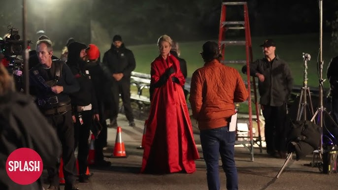

Set Arası
110+ üye
Set Arası'nda efsanevi yapımların perde arkasındaki insan hikayelerini, yönetmenlerin set alışkanlıklarını, ekip ritüellerini ve sinema tarihine yön veren ikonik kulis fotoğraflarının hikayelerini paylaşıyoruz.
Devamını görmek için hesap oluşturmanız gerekiyor.
Kaydol
Set arası denince aklıma direkt Stanley Kubrick’in setlerindeki o meşhur satranç masaları geliyor. Dr. Strangelove ve 2001: A Space Odyssey çekimlerinde, sahnelerin arasındaki o gerilimli boşluklarda oyuncularla ve ekiple sabahlara kadar satranç oynarmış. Hatta Tony Curtis bir keresinde "Kubrick ile satranç oynamak, onunla film çekmekten daha zordu" demişti. Yönetmenin o analitik zihninin set aralarında bile hiç durmaması inanılmaz bir detay.
Geçen gün o satranç oynarken çekilmiş siyah-beyaz bir set fotoğrafını görmüştüm, yüksek kontrastlı ışık yönetimi yüzünden fotoğrafın kendisi bile bir Kubrick filmi gibi duruyordu kanka. Set arası fotoğrafları bazen filmin kendisinden daha sanatsal olabiliyor.
Set arası fotoğrafçılığından bahsedelim bence biraz. Brigitte Lacombe'un Martin Scorsese setlerinde çektiği samimi, çiğ ve dökümanter tarzı fotoğraflar olmasa, sinema tarihinin en büyük dehalarının o en kırılgan ve insani anlarına asla şahit olamazdık. Set arası fotoğrafçılığı başlı başına bir belgesel sanatı.
Hala bağımsız sinemada o samimi set arası ruhunu koruyan çok iyi ekipler var. Safdie kardeşlerin set aralarındaki o yüksek enerjili kaosu da buraya paslayalım.
Set arası diyince aklıma David Lynch'in Twin Peaks setindeki kahve ve donut molaları geliyor aklıma. Setin o rahat ve eğlenceli havası olmasa oyuncular o psikolojiyi kaldıramazdı herhalde.